01
Sistemas & Backend
Construção de aplicações completas, APIs REST e lógica de negócios resiliente utilizando Python, Node.js, PHP, C# e PostgreSQL/MySQL.
Estudante de Engenharia de Software focado em desenvolvimento backend, sistemas web comerciais, automações e cibersegurança.
Estudante de Engenharia de Software com formação sólida em desenvolvimento web, backend, arquitetura de bancos de dados relacionais e cibersegurança. Movido por disciplina, pensamento analítico e capacidade de transformar regras de negócio complexas em sistemas ágeis e escaláveis.
Construção de aplicações completas, APIs REST e lógica de negócios resiliente utilizando Python, Node.js, PHP, C# e PostgreSQL/MySQL.
Fundamentos práticos de segurança defensiva, análise de logs, correlação de incidentes, detecção de ameaças e frameworks MITRE ATT&CK e NIST.
Scripting com Python e PowerShell, automação de processos repetitivos e integração de modelos generativos para elevar a produtividade comercial.
Explore todos os projetos desenvolvidos, divididos entre sistemas de gestão para negócios reais, automações empresariais com IA e clones educacionais de alta fidelidade.
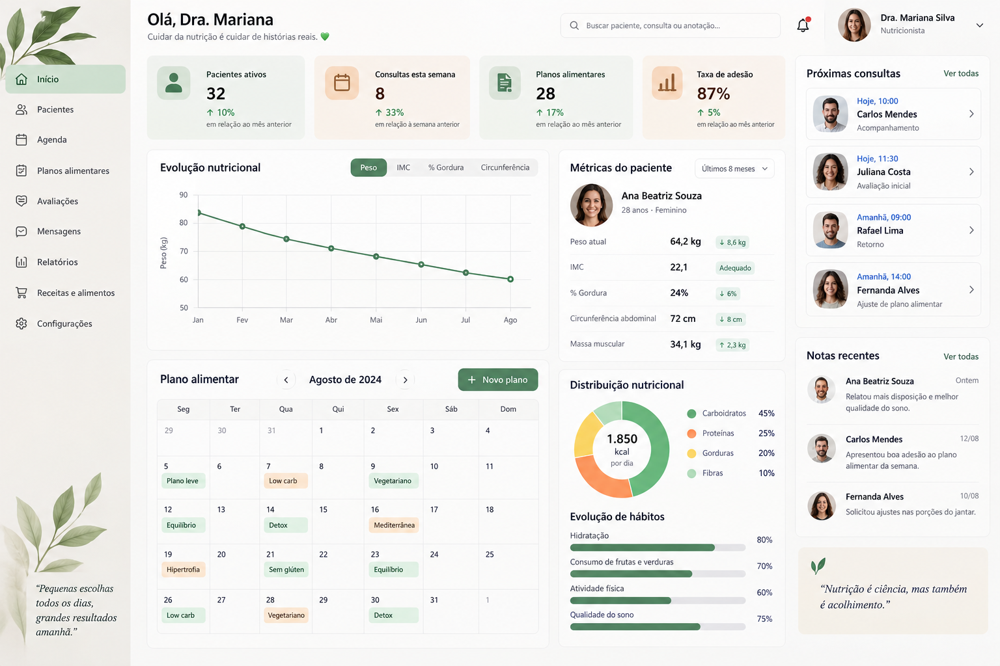
SaaS clínico para gestão nutricional de alta performance: prontuário eletrônico unificado (PEP), antropometria avançada, cálculo GET/VET e cardápios inteligentes.
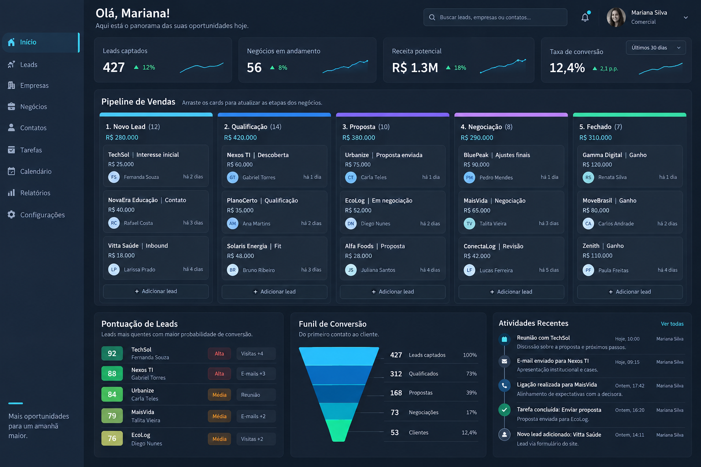
SaaS comercial com captura automatizada de dados no Google Maps, Kanban dinâmico de negociações, score de oportunidade e integração para WhatsApp.
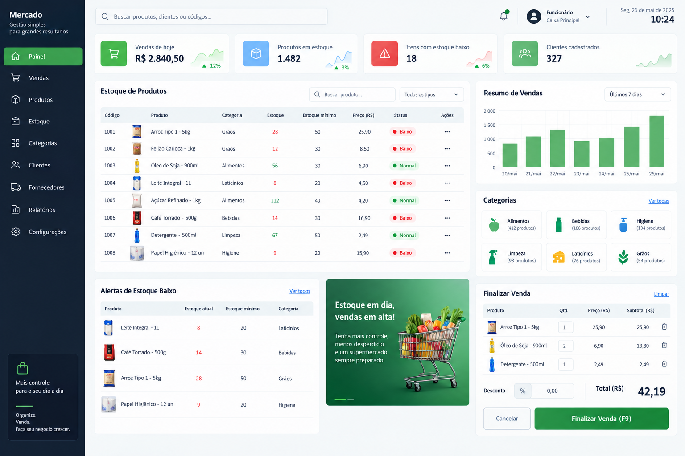
Frente de caixa (PDV) ágil com controle de código de barras, estoque mínimo automático, precificação, histórico de vendas e fechamento diário de caixa.
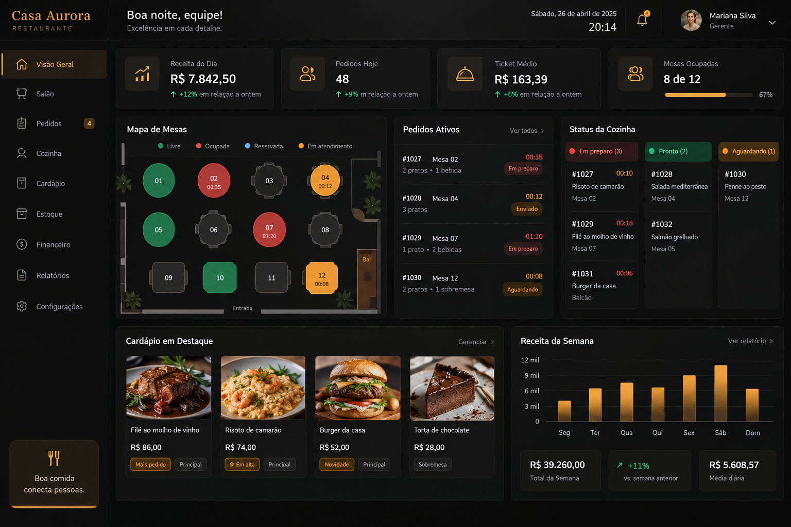
Mapa interativo de mesas, comanda digital rápida, comunicação direta com a cozinha/KDS, divisão de contas e controle de estoque de insumos.
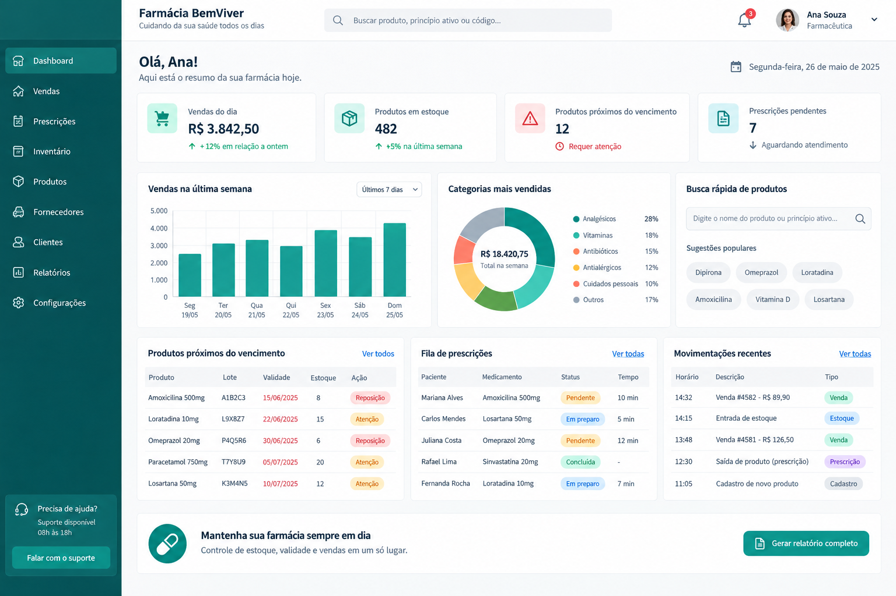
Controle rigoroso de lotes e datas de validade de medicamentos, cadastro de fornecedores, prescrições médicas e emissão de comprovantes de venda.
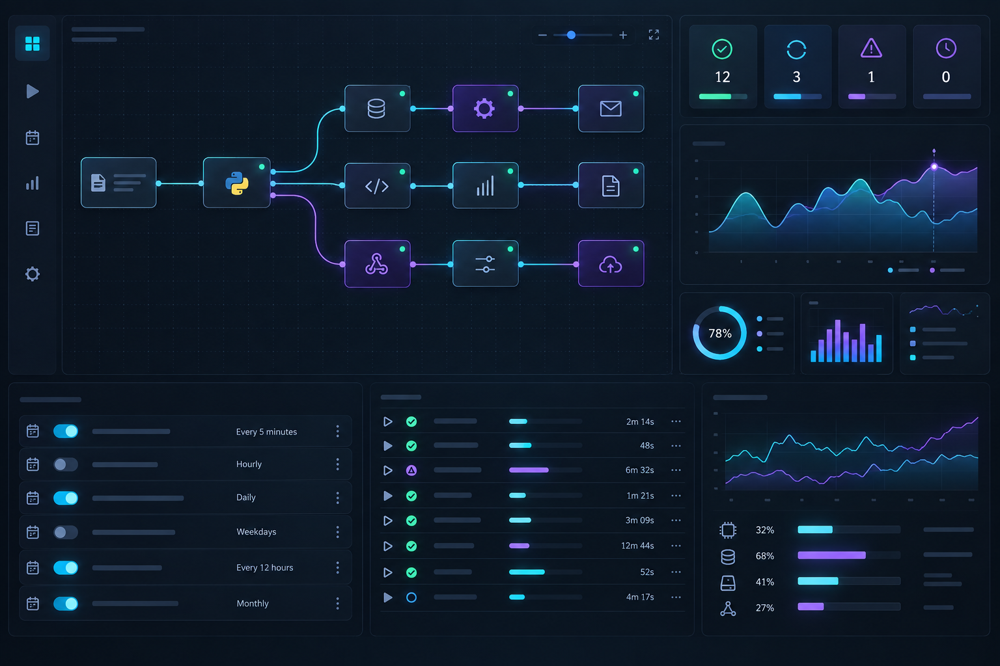
Desenvolvimento de rotinas automatizadas em Python e PowerShell para extração de relatórios, disparos de cadência segura e sincronização de dados.
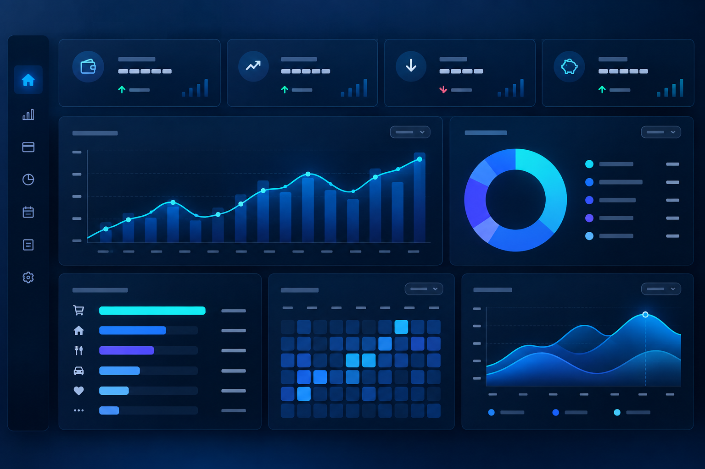
Arquitetura de dados relacionais com normalização em MySQL/PostgreSQL, queries analíticas complexas, índices otimizados e relatórios de métricas comerciais.
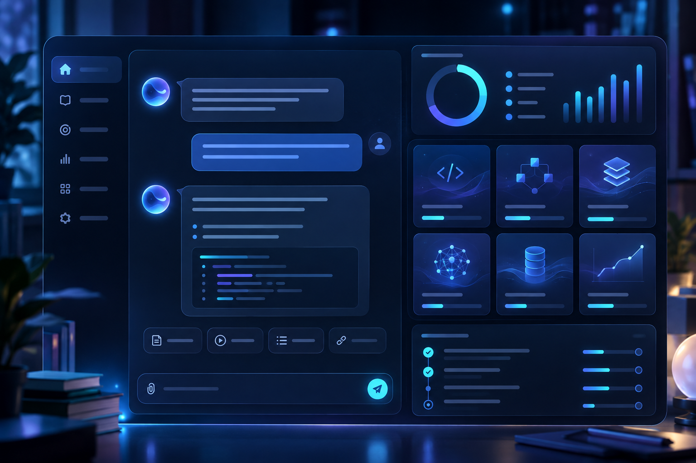
Integração de APIs de inteligência artificial generativa, geradores de roteiros de prospecção com IA, atendimento automatizado e engenharia de prompts.
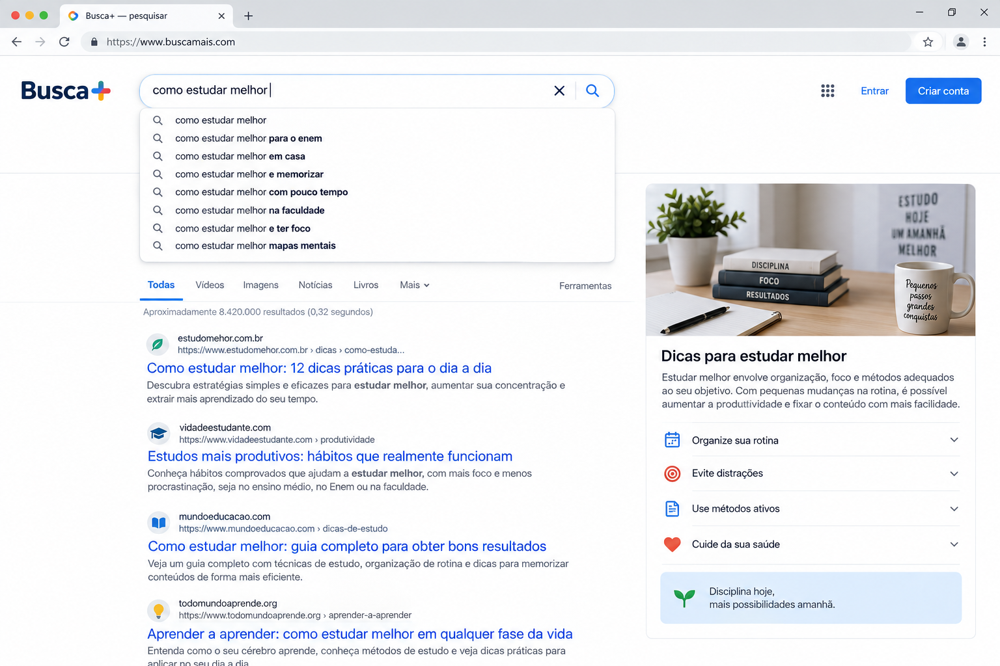
Recriação da interface de pesquisa do Google, com sugestões de autocomplete, busca dinâmica e navegação visual de resultados em páginas.
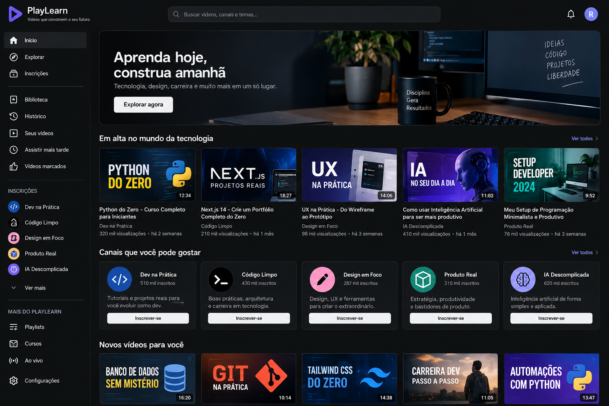
Plataforma de catálogo de vídeos com menu lateral retrátil, sistema de filtros por categorias, thumbnails responsivas e reprodutor interativo.
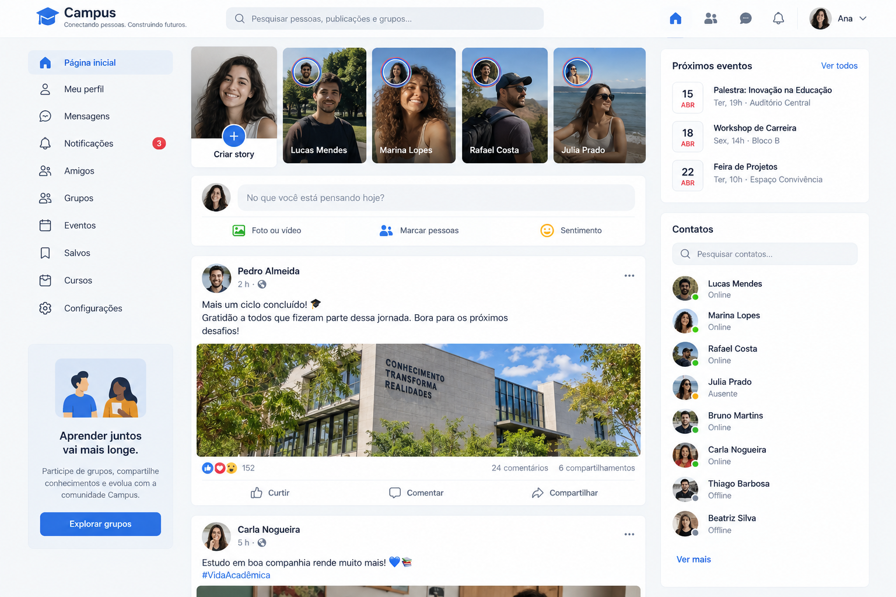
Interface completa de rede social: feed com postagens, barra de histórias (stories), coluna de contatos online, reações e grupos.
Nota: Os clones de plataformas foram desenvolvidos estritamente com finalidade didática e de estudo de interface.
Conheça meu perfil profissional, competências técnicas em engenharia de software e cibersegurança, ou faça o download direto do documento oficial em PDF.
Estudante de Engenharia de Software | Desenvolvimento Backend · Python · PHP · C# · SQL · Cibersegurança
Estudante de Engenharia de Software com experiência profissional formal em ambientes de alta demanda e foco em resultados. Em transição estruturada para a área de Tecnologia, com formação prática em desenvolvimento de software (PHP, Python, C#, JavaScript, Node.js), desenvolvimento web (HTML, CSS), banco de dados relacional (MySQL, SQL) e fundamentos de cibersegurança e SOC. Possui conhecimento em ferramentas e práticas de segurança da informação, incluindo análise de logs, correlação de dados e frameworks como MITRE ATT&CK e NIST. Busca oportunidade de estágio ou posição júnior para contribuir com entregas reais enquanto aprofunda sua carreira no setor.
Contribuir como Estagiário ou Desenvolvedor Júnior em empresas de tecnologia, aplicando conhecimentos em desenvolvimento de software, backend, web e cibersegurança para auxiliar na construção de soluções eficientes. Comprometido com aprendizado contínuo, disciplina e entrega de valor desde o primeiro dia.
Classificação predominante como Projetista — indicado para funções que exigem autonomia, iniciativa e foco na entrega de soluções.
• Inglês: Técnico (leitura ágil de documentação, código e materiais técnicos)
• Espanhol: Técnico
Atuação em ambiente de alta demanda com metas mensuráveis, argumentação analítica e acompanhamento de indicadores de desempenho.
Suporte operacional ao fluxo de atendimento, gestão de demandas simultâneas, controle de processos internos e comunicação ágil sob pressão.
Comunicação consultiva e trabalho em equipe em ambiente corporativo estruturado de varejo de grande porte com métricas definidas.
Uma base em constante expansão unindo técnica de desenvolvimento, engenharia de software e visão analítica de negócios.
Estou aberto a oportunidades profissionais (Estágio / Júnior), conexões e projetos desafiadores.
Conversar no WhatsApp ↗